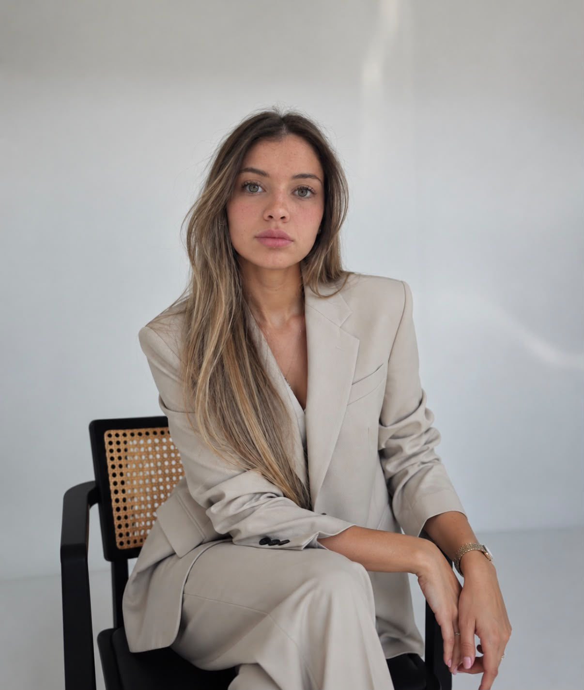

Lucía Miranda
Diseñadora UX/UIUX/UI Designer Diseñadora de ProductoProduct Designer Desarrolladora Front-endFront-end Developer
Transformo necesidades de usuarios y del negocio en experiencias digitales claras, funcionales y responsive, desde la investigación hasta el código. I turn user and business needs into clear, functional and responsive digital experiences, from research all the way to code.

productos digitalesyears building
digital products
Productos que
diseñé y construí.Products I designed
and built.
Sistemas internos, plataformas y sitios: de la investigación al código, con foco en quien los usa todos los días.Internal systems, platforms and websites: from research to code, focused on the people who use them every day.
Casos de estudio UXUX case studies
Proyectos conceptuales de punta a punta: problema, investigación, proceso y solución.End-to-end concept projects: problem, research, process and solution.
Más proyectosMore projects
UX research, diseño de interfaces y desarrollo web.UX research, interface design and web development.
Diseño productos digitales que se sienten simples. Combino el pensamiento de producto, el diseño centrado en las personas y el desarrollo front-end para que cada idea llegue al usuario tal como fue pensada. I design digital products that feel simple. I combine product thinking, human-centered design and front-end development so every idea reaches the user exactly as it was intended.
Vengo de la gestión de producto: sé relevar requerimientos, hablar con stakeholders y priorizar. Eso me permite diseñar con el negocio en mente y llevar las interfaces a código sin perder nada en el camino.I come from product management: I know how to gather requirements, work with stakeholders and prioritize. That lets me design with the business in mind and take interfaces into code without losing anything along the way.
Trabajo con HTML, CSS, JavaScript, React y APIs REST, con foco en diseño responsive, accesibilidad y componentes reutilizables.I work with HTML, CSS, JavaScript, React and REST APIs, with a focus on responsive design, accessibility and reusable components.
Qué puedo
hacer por vos.What I can
do for you.
Estrategia UXUX Strategy
Investigación con usuarios, flujos y arquitectura de información para decidir qué construir y por qué.User research, flows and information architecture to decide what to build and why.
Diseño UIUI Design
Interfaces cuidadas, prototipos y sistemas de diseño consistentes y escalables.Polished interfaces, prototypes and consistent, scalable design systems.
Desarrollo front-endFront-end Development
Aplicaciones web responsive, accesibles y rápidas, con componentes reutilizables.Responsive, accessible and fast web apps built with reusable components.
Gestión de productoProduct Management
Requerimientos, priorización y roadmap alineados con los objetivos del negocio.Requirements, prioritization and roadmaps aligned with business goals.